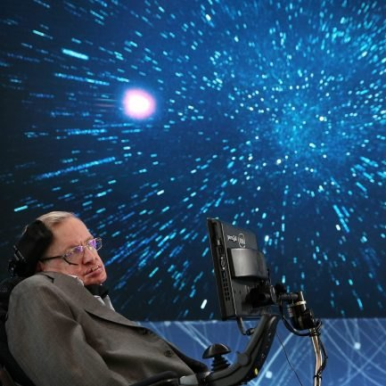
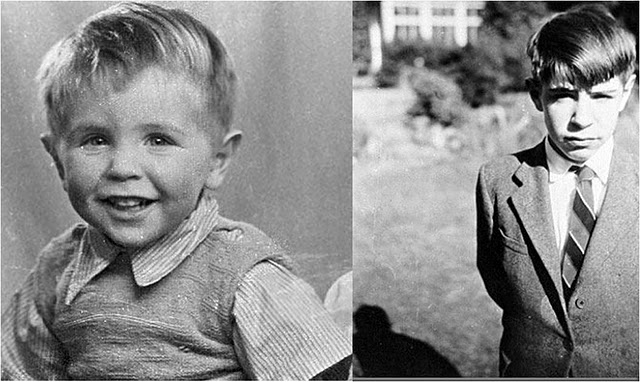
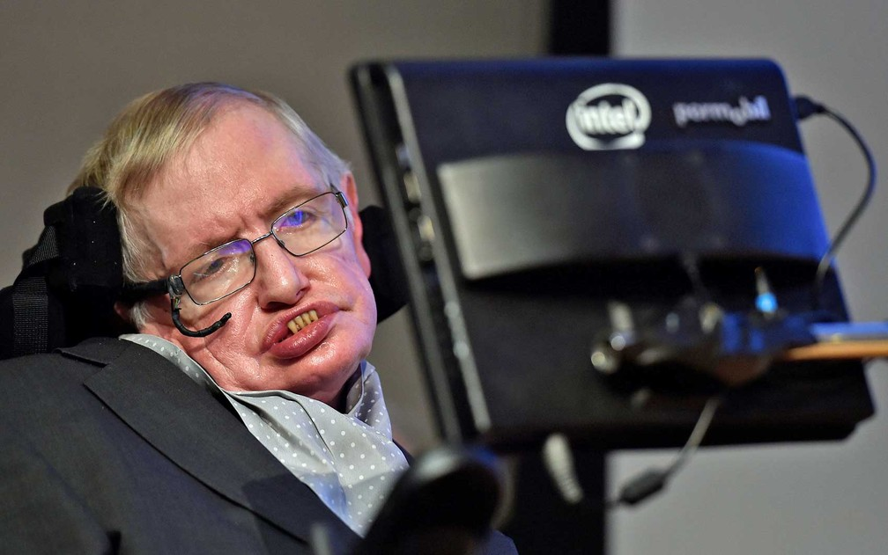

Teorias

Seus trabalhos científicos incluem um teorema sobre a singularidade gravitacional no âmbito da relatividade geral (em colaboração com Roger Penrose) e a previsão teórica de que os buracos negros emitem radiação, frequentemente chamada de Radiação Hawking. Hawking foi o primeiro cientista a estabelecer uma teoria da cosmologia explicada pela união da teoria geral da relatividade e da mecânica quântica. Ele foi um defensor fervoroso da interpretação de muitos mundos na mecânica quântica.
Hawking alcançou sucesso comercial com vários trabalhos nos quais ele discute suas próprias teorias e cosmologia em geral. Seu livro Uma Breve História do Tempo permaneceu na lista de mais vendidos do The Sunday Times durante 237 semanas. Em 2002, Hawking ficou em 25º lugar na pesquisa da BBC sobre os 100 Maiores Britânicos de todos os tempos. Em 1963, Hawking foi diagnosticado com uma forma de início precoce da doença neuronal motora (MND; também conhecida como esclerose lateral amiotrófica "ALS" ou doença de Lou Gehrig) que o paralisou gradualmente ao longo das décadas.
Os principais campos de pesquisa de Hawking foram cosmologia teórica e gravidade quântica. Em 1971, em colaboração com Roger Penrose, provou o primeiro de muitos teoremas de singularidade; tais teoremas fornecem um conjunto de condições suficientes para a existência de uma singularidade no espaço-tempo. Este trabalho demonstra que, longe de serem curiosidades matemáticas que aparecem apenas em casos especiais, singularidades são uma característica genérica da relatividade geral.
Hawking também sugeriu que, após o Big Bang, primordiais ou miniburacos negros foram formados. Com Bardeen e Carter, ele propôs as quatro leis da mecânica de buraco negro, fazendo uma analogia com termodinâmica. Em 1974 calculou que buracos negros deveriam, termicamente, criar ou emitir partículas subatômicas, conhecidas como radiação Hawking, além disso, também demonstrou a possível existência de miniburacos negros. Hawking também participou dos primeiros desenvolvimentos da teoria da inflação cósmica no início da década de 1980 com outros físicos como Alan Guth, Andrei Linde e Paul Steinhardt, teoria que tinha como proposta a solução dos principais problemas do modelo padrão do Big Bang.
Hawking escreveu diversos livros que ajudaram a divulgar complexas teorias cosmológicas em linguagem fácil para leigos. O primeiro foi Uma Breve História do Tempo, escrito entre 1982 e 1984 e vendendo mais de 10 milhões de cópias. Obras seguintes incluem O Universo numa Casca de Noz (2001), Uma Nova História do Tempo (2005, versão atualizada de sua estreia co-escrita com Leonard Mlodinow) e God Created the Integers (2006). Em parceria com sua filha Lucy, Hawking também escreveu livros infantis sobre o universo com George e o Segredo do Universo (2007) e suas duas continuações.
historia

Stephen William Hawking, conhecido como Stephen Hawking, nasceu em Oxford, Inglaterra, no dia 8 de janeiro de 1942. Seu pai cursou medicina e sua mãe estudou filosofia, política e economia, ambos na Universidade de Oxford. Com seis anos, já construía trens de brinquedo. Considerado uma criança precoce, os colegas da escola o apelidaram de Einstein.
Stephen odiava matemática, porque achava fácil demais. Sua paixão era física e astronomia. Com 17 anos ganhou uma bolsa para estudar física na Universidade de Oxford. Seus colegas eram dois anos mais velhos que ele. Concluído o curso de Física, Stephen foi aceito no mestrado da Universidade de Cambridge.
Com 21 anos, após uma queda de patins, Stephen foi levado ao médico, que o diagnosticou com esclerose lateral amiotrófica (ELA), doença degenerativa que iria progressivamente paralisar seus músculos, e segundo o médico, o levaria à morte em no máximo três anos.
Apesar do diagnóstico devastador, em 1965, Stephen casa-se com Jane Wilde, amiga de uma de suas irmãs. Na festa do casamento já se apoiava em uma bengala.
Em 1970, Stephen parou de andar e começou a fazer uso de uma cadeira de rodas. Nessa época, já tinha três filhos e era um físico conhecido que trabalhava no Instituto de Tecnologia da Califórnia, nos Estados Unidos.
Em 1985, com a saúde bastante agravada por uma pneumonia, durante uma viagem a Suíça, os médicos sugeriram desligar o respirador artificial, mas sua esposa não aceitou e levou o marido de volta para Cambridge. Submetido a uma traqueostomia, nunca mais falou. A partir de então, faz uso de um computador, com voz eletrônica, para se comunicar.
Trabalhos

Ainda em sua tese de doutorado, Stephen Hawking estudou sobre o conceito da singularidade: um conjunto de resultados com base na relatividade geral, os quais tentam compreender se a gravidade é necessariamente singular. Foi um de seus primeiros e mais reconhecidos trabalhos de pesquisas.
Inicialmente, os estudos foram feitos em conjunto com o matemático Roger Penrose e, por conta disso, as teorias também são conhecidas como teoremas de singularidade Penrose-Hawking. Posteriormente, o trabalho foi expandido e, na extensão de seu trabalho, o professor de Cambridge demonstrou que o conceito de singularidade na física não apenas inclui a existência de singularidades como também abrange para a teoria de que o universo pode ter começado como uma singularidade (um evento único, ou seja, o Big Bang).
Os teoremas respondem de maneira satisfatoriamente razoáveis em termos de energia, o que significa que uma solução genérica de espaço-tempo na relatividade geral conterá ocasiões (singularidades) em que a teoria irá se romper. Hawking e Penrose publicaram um livro em 1970 que comprova que o universo obedece à teoria da relatividade geral e que esta é válida para qualquer modelo de cosmologia física desenvolvida por Alexander Friedmann.
Ao lado do físico Leonard Mlodinow, Hawking utilizou alguns teoremas da velha Teoria da Relatividade para explicar como a “curvatura” do espaço-tempo estaria diretamente relacionada à energia e à presença de qualquer matéria e radiação – cujas relações são feitas por um sistema de equações de campo. A influência da matéria e da energia, portanto, influenciariam um meio, gerando a gravidade e os buracos negros. Além disso, a Teoria da Relatividade enuncia que o tempo passa mais devagar quando há proximidade com um corpo de grande massa, como um planeta ou estrela.
Quando esta pesquisa foi divulgada, acreditava-se que ela estava relacionada apenas aos grandes eventos do universo. Porém, o professor explicou que sua Teoria da Relatividade pode ser utilizada para qualquer sistema de medição de tempo e espaço, com um simples GPS. Segundo ele, sem a relatividade, existiram resultados imprecisos, medidos por quilômetros de diferença.
Em algum momento posterior a descoberta de sua doença, Stephen Hawking descobriu algo que mais tarde viria a ser conhecido como as Leis da Mecânica de Buracos Negros. Tudo começou quando o físico sugeriu que, após o Big Bang, além do universo primordial, minuburacos negros também foram formados.
Em conjunto com James M. Bardeen e Brandon Carter, Hawking propôs as quatro Leis da Mecânica dos Buracos Negros. As pesquisas sobre o caso, porém, foram corrigidas ao longo dos anos por diversos integrantes da comunidade científica. O próprio físico teórico começou a perceber, por meio de cálculos e verificações astronômicas, que alguns dos resultados contradiziam a Segunda Lei dos Buracos Negros – que diz que o horizonte de eventos dos buracos negros nunca poderia diminuir.
Em 1974, ele descreveu em conjunto com físicos russos, que os buracos negros emitem um tipo de radiação, e esta, por sua vez, explicava as aparentes contradições em suas observações anteriores. A descoberta foi até mesmo nomeada em sua homenagem e passou a ficar conhecida como Radiação Hawking.
Ao longo dos anos seguintes, outras informações propostas pelo próprio professor contradisseram até mesmo princípios fundamentais da mecânica quântica, causando até mesmo o evento que ficou conhecido como “Guerra dos Buracos Negros”.
A Grande Expansão, comumente conhecido como Big Bang, é uma teoria cosmológica que predomina o conceito de criação do universo, sustentada por explicações complexas que ainda hoje necessitam de evidências científicas e de observação. Porém, após começar uma nova linha de pesquisa, pautada na teoria quântica sobre a origem do universo, Stephen Hawking sugeriu que, após o período de criação, o universo primitivo passou por um período de intensa inflação.
Utilizando as flutuações quânticas, o professor foi um dos primeiros a mostrar que minúsculas variações na distribuição da matéria durante este período de inflação podem ter dado lugar a propagação de galáxias espalhadas pelo incomensurável universo. Neste caso, ele explica que uma pequena diferença se expandiu dentro da estrutura cósmica que enxergamos.
Esta é uma das afirmações mais polemicas do famoso físico teórico, já que, em sua teoria de inflação, ele propõe que o universo se criou sozinho, sem o auxílio ou comando de uma divindade superior para executar tal processo. Suas teorias não são totalmente infundadas quanto essa afirmação, já que, utilizando a teoria da gravidade, por exemplo, ele sugere que o universo é capaz de regular seus mecanismos sozinho. De acordo com Hawking, “se o universo não tem limites, mas é autossuficiente, então Deus não teria tido qualquer liberdade de escolher como o universo começou”.